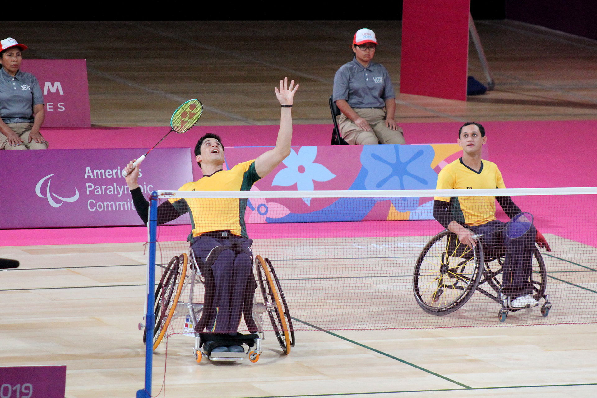
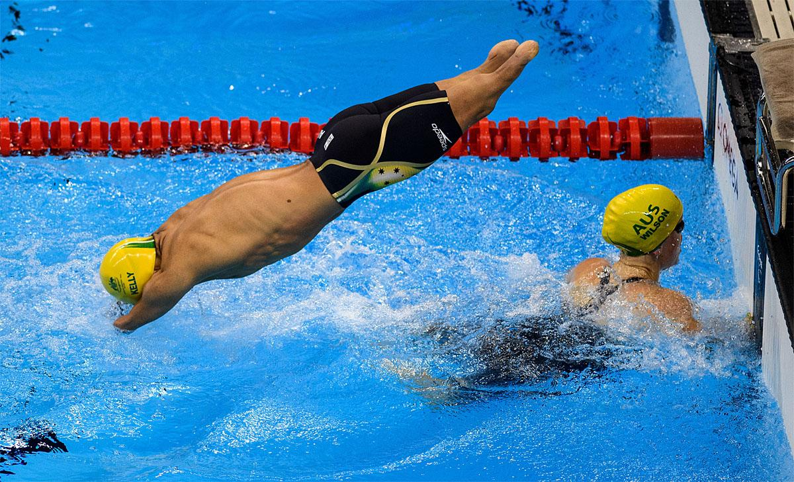
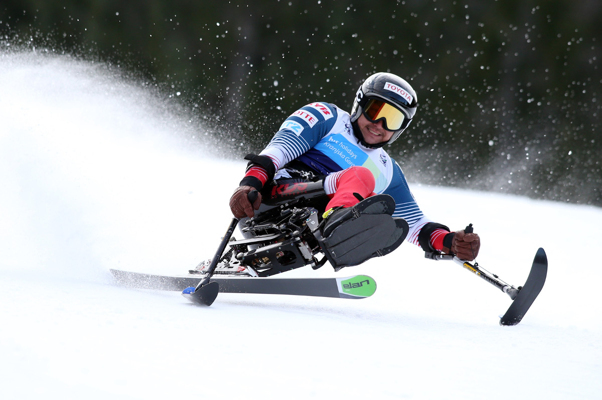

Paralympic
The Paralympics are major international multi-sport events for athletes with disabilities, held shortly after the Olympic Games and governed by the International Paralympic Committee (IPC).
The Paralympic Games currently feature 29 sports: 23 Summer and 6 Winter sports.
How to Enjoy to Watch 6 Main Sports in Paralympic?

Since the court is smaller to fit wheelchair dimensions, the shuttlecock flies much faster! So you should focus on the players' insane racket control!
5 Sources

It is interesting that the starting signal is different depending on the type of disability, such as sound or touch, and you can feel movend when you watch athletes cutting through the water using only their bodies without any equipment!

Watching the coordination between the runner and the guide runner is one of the highligts of the race!

Watching sit-skiers make sharp turns at speeds of over 100km/h while balancing with the small skis attached to the ends of their poles will be thrilling!

It will be very impressiv to see athletes generate incredible speed and control the ball even with just one leg!

It is really amazing to see players push their sled with two short sticks instead of their legs while moving at great speed and cotrolling the puck!